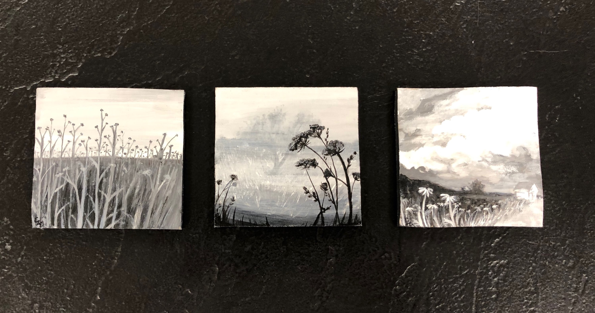

Living and Loving Art
I am Savannah Anciso and I am a freelance artist, illustrator, and art educator.
From a young age we all art (in some way shape or form),
some of us love it so much it becomes more than a hobby/or past time.
I have been doodling and painting since my earliest memories and art
has always been in my life. Explore the site to keep up and view all current collections,
read/see behind-the-scenes musings, and find out what is happening next (exhibitions, thoughts, crafts etc).
Do you want to subscriber to our newsletter?